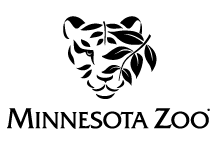

I am a freelance UX/UI designer, illustrator, and naturalist based in Minneapolis. I have a Bachelors in Environmental Studies and continually aspire to share my knowledge of nature and mold it with my other passions: design and helping people.
When I’m not working I love to draw, write poetry, meditate, hang with friends, as well as take long walks idenifying and learning about other forms of life.
Research Planning User Interviews Usability Testing User Persona Creation
Graphic Design Definition & Ideation Prototypes/Wireframes UX/UI Design
HTML/CSS Web/Mobile/App Responsive Design Information Architecture
Candor: A D.B.T. Based mobile app for having difficult conversations
Minnesota Department of Natural Resources Responsive Website Redesign
Minnesota Zoo: Non- Profit Website Redesign
or Call Me: 952-454-7975
Copyright 2022|Designed and coded by Daniel Decker